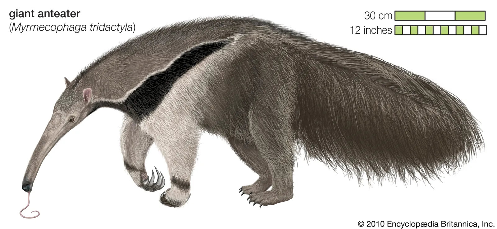

Мурахоїд великий
Опис
Довжина його тіла досягає 110–130 см. Зовнішній вигляд мурахоїда, як і інших представників неповнозубих, вельми химерний: довга вузька морда, що нагадує трубку, крихітні вузькі очі, довгий, стиснутий зі сторін хвіст з урахуванням шерсті в довжину досягає 95 см, а то й більше. Вага дорослої особини — до 40 кг, загальна довжина тіла від носа до кінчика хвоста — близько 2,3 м.Великий достатньо пухнастий хвіст.
Гігантський мурахоїд зустрічається в багатьох місцях існування, включаючи луки та тропічні ліси . Він шукає їжу на відкритих місцях і відпочиває в більш лісистих місцях існування. Харчується в основному мурахами й термітами , використовуючи передні кігті, щоб викопувати їх, і довгий липкий язик, щоб їх збирати. Хоча гігантські мурахоїди живуть на різних ареалах , вони здебільшого поодинокі, за винятком стосунків між матір’ю та потомством, агресивних взаємодій між самцями та під час спарювання. Мурахоїди-матері носять потомство на спині, поки його не відлучать від грудей.
Гігантський мурахоїд внесений до списку вразливих Міжнародним союзом охорони природи . Він був винищений з багатьох частин свого колишнього ареалу. Серед загроз для його виживання є знищення середовища існування , пожежі та браконьєрство заради хутра та м’яса диких тварин , хоча деякі мурахоїди живуть у захищених територіях. Завдяки своєму характерному зовнішньому вигляду та звичкам мурахоїд згадується в доколумбових міфах і казках , а також у сучасній популярній культурі.
Спосіб життя
Живлення
Живиться мурахоїд мурахами та термітами. Зруйнувавши кігтями термітник або мурашник, він приступає до трапези. Мурахоїд викидає 60-сантиметровий язик, змочений липкою слиною, частотою у 160 разів на хвилину, добуваючи за день до 30 000 комах. Також нещодавно було встановлено, що мурахоїди можуть живитися і плодами пальмового дерева, розриваючи плід гострими кігтями, добуваючи таким вологу та вітаміни.
Розмноження
Самиці мурахоїда — турботливі матері, вони носять на спині єдине чадо і не розлучаються з ним від народження й до наступної вагітності. Завдяки забарвленню, подібному до материнського, дитинча майже непомітне.
Охоронний статус
Гігантський мурахоїд — рідкісна тварина, занесена до Червоного списку МСОП — статус «вразливий».
Галерея